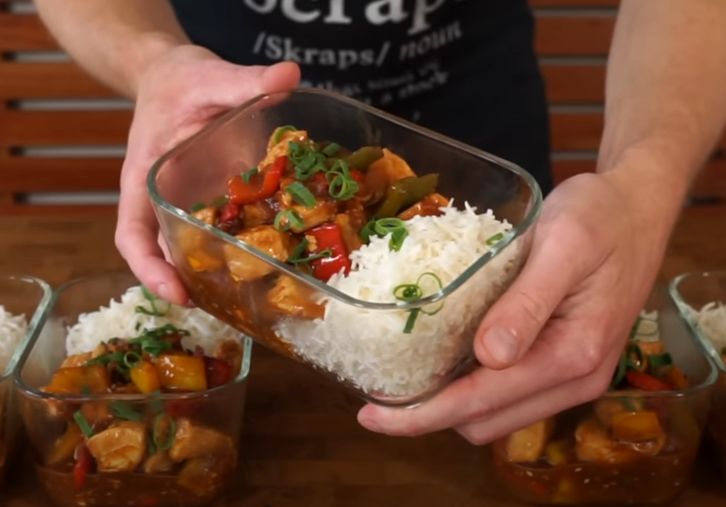

Back to the list of recipes
Sweet and Sour Chicken

Ingredients
Rice
- 300 gr basmati rice
- 600 ml of water
Sweet and Sour Sauce
- 125 ml Light soy sauce
- 80 ml Pineapple juice
- 4 tbsp honey
- 2 tbsp Worcestershire Sauce
- 2 tbsp Apple cider vinegar
- 2 tbsp Tomato Ketchup
- 2 tbsp Corn flour or corn starch
Sweet and Sour Chicken
- 2.5 tbsp Grapeseed oil, Divided
- 1.4 kg Chicken Breast
- 3 Bell Peppers, Large diced
- 1 Brawn (Yellow) Onion, Sliced
- 4 Garlic Cloves, minced
- 15g Ginger, Peeled and minced
- Seasoning to taste
Steps
Rice
- Wash rice
- Put it in 600 ml cold water
- Salt to taste
- Wait for boiling
- Lower the fire and leave for 40 minutes
- Remove rice out of fire, leave it for 4 minutes and mix it with spoon making sure nothing stuck together
Sweet and Sour Chicken
- Slice 3 bell peppers in large chunks (remove core)
- Throw it to bowl
- Slice 1 onion in narrow halfrings
- Throw it to bowl, mix with peppers
- Mince ginger (имбирь) and garlic
- Slice chicken breast in even pieces (like 5 cubic sm)
- Mix in another bowl all Ingredients from "Sweet and Sour sauce" list
- Use Vok. Put it on high heat, add oil, wait until it warms up
- Throw 1st bowl (pepper+onion) in vok, mix it for 4 minutes
- Remove pepper and onion from the pot, add oil, add chicken and mix it evenly with spoon, leave for a 3 minutes
- After chicken gets brown by 1 side, mix it for another 3 minutes.
- If you see a water below chicken, drain it, cause otherwise chicken become like a rubber
- Add garlic and ginger paste, mix it and cook for 45 seconds
- Add pepper and onion back, mix it for another 45 seconds.
- After that add sauce and mix it for 2 minutes
- Get it off heat. Serve with rice. Enjoy!
Back to the list of recipes